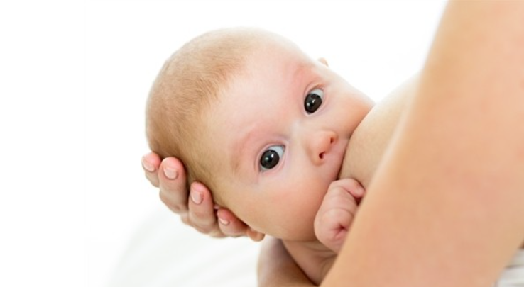

Грудне годування дитини - як довго треба годувати?
Зараз вже ні в кого не викликає сумніву, що грудне вигодовування – це найкорисніший і зручний спосіб харчування немовлят.
Завдяки великому числу книг і публікацій сучасні матусі борються за збереження лактації. Проте через деякий час у багатьох з них неминуче з’являється питання: а коли ж треба припиняти годувати грудьми, або як довго годувати після року?
Це питання викликає багато суперечок. Частіше годуючі мами прислухаються до порад старшого покоління. Бабусь малюків, як і деякі автори посібників з догляду за дитиною, вважають, що годування після року «біологічно недоцільне і необгрунтоване». Інтернет переповнений інформацією від консультантів з грудного вигодовування, які одностайно стверджують: дітей можна годувати грудьми до 2,5-3 років, а то й довше. У той же час багато педіатрів кажуть, що не бачать особливої потреби у годуванні грудьми дітей старше року, і залишають рішення на розсуд мам. Ми ж надамо вам інформацію до роздумів.

ПЕРЕВАГА ГРУДНОГО ГОДУВАННЯ
У ХХ столітті лікарі замислювалися над тим, чому в країнах з низьким рівнем соціального розвитку частота виникнення раку молочної залози в десятки разів менша, ніж у благополучній Європі та США. Більшість дослідників зійшлися на думці, що першочергову роль у профілактиці раку грудей у цих жінок відіграють часті пологи і тривале грудне вигодовування.
Тут вся справа в гормонах. Основні гормони, які змушують фолікул дозрівати, щоб вийшла яйцеклітина – це естрогени. Але при їх надлишку в організмі виникає передменструальний синдром у вигляді болів внизу живота, набряклості, нагрубання молочних залоз. Вони сприяють появі мастопатії, міоми матки, ендометріозу, порушенні менструального циклу.
Під час вагітності естрогенів стає менше. Після пологів, якщо жінка годує грудьми, виділяється гормон пролактин, який сприяє не тільки виробленню молока, але і пригнічує синтез естрогенів, призводить до відсутності овуляції, сприятливо позначається на параметрах жіночого здоров’я.
Сто років тому через велику кількість пологів і тривалого (2-3 роки) грудного вигодовування жінка протягом життя мала всього 100-150 менструацій. На теперішній час маючи 1-2 дітей, які часто перебували на штучному вигодовуванні, сучасна жінка має 400 менструацій протягом репродуктивного періоду. Зменшення кількості пологів та тривалості грудного вигодовування призвело до збільшення естрогенного навантаження на організм у 4 рази, зростання патології жіночої статевої сфери (пухлин матки та молочних залоз). З метою збереження власного здоров’я (та здоров’я дитини) годувати грудьми треба довше – до 2 років. Більш тривале грудне вигодовування може порушувати процес відновлення менструального циклу.
Діти, яких годували довше, пізніше були помічені з більш вмілою соціальної адаптації, подовжується більш тісний емоційний зв’язок між матір’ю та дитиною, що сприяє зміцненню довірчих і спокійних взаємин у майбутньому. Крім цього у годуючої жінки довше зберігається «стереотип материнської поведінки». Вона більш уважно стежить за дитиною, що призводить до зменшення ймовірності травм у малюка, знижує ризик інфекційних захворювань.
Ще один вагомий довід для тривалого грудного вигодовування – це зручність. Якщо дитина впала, або її хтось образив – досить для заспокоєння дати груди. Тут механізм заспокоєння пов’язаний не тільки з самим смоктанням, але і з наявністю в грудному молоці ендорфінів (гормонів радості), які піднімають настрій.
Материнське молоко ідеально збалансовано за складом, який змінюється з часом по мірі дорослішання малюка. Малюк захищений від анемії, дефіциту кальцію, йоду, частих важких інфекційних захворювань, а одужання настає швидше. В грудному молоці містяться біологічно активні компоненти – імуноглобуліни, лізоцим, лактоферин, комплемент, лейкоцити. Вони захищають дитину від кишкових інфекцій і дозволяють легше переносити будь-які інші хвороби.
Доведено, що концентрація імуноглобулінів у молоці збільшується з віком малюка і з скороченням числа годувань. Таким чином, старші діти отримують сильну імунну підтримку. Встановлено, що тривале годування (більше 2 років) знижує у дитини ризик розвитку цукрового діабету, атеросклерозу та інших захворювань при досягненні нею зрілого віку.
Ще один компонент материнського молока – олігосахариди – сприяють розвитку власної мікрофлори, тим самим захищаючи від дисбактеріозу та алергії.
Вчені довели, що в грудному молоці містяться білки, які сприяють розвитку головного мозку дитини. Формування мозку на 80 % відбувається лише до трьох років. У процесі розвитку мозку дуже важливе значення мають незамінні амінокислоти і фактори росту, які містяться в материнському молоці. Жирні кислоти беруть участь у синтезі мієлінової оболонки нервів, а це сприяє швидкому проведенню імпульсів по нервових волокнах.
Молоко утворює на зубах захисну жирову плівку, а біологічно активні речовини не дають шкідливим мікроорганізмам розмножуватися в порожнині рота, діти менш схильні до карієсу. Кальцій материнського молока краще засвоюється.
На другому році життя малюка змінюється кількість жирів у молоці. Молоко стає більш жирним, збільшується кількість антитіл і дитина має природний захист від інфекцій. Годування після року також сприяє формуванню мови і слуху.
Діти, які довго смокчуть груди, не смокчуть пальці, одяг, інші предмети. Дитина задовольняє смоктальний рефлекс, який повністю зникає тільки до 3-4 років. Малюки рідко хворіють, на отит, у них краще відбувається розвиток щелепно-лицьового аппарату, створюється правильний прикус.
Між роком і двома дитина повинна отримувати 700 мл. молока на добу. Заміна на коров’яче молоко небажана тому, що воно більш концентроване, містить у 3-4 рази більше солей, ніж людське, і в 3 рази більше білка. В ньому переважає важко перетравлюваний людиною білок казеїн, в той час, як в жіночому – альбумін, ідентичний білкам сироватки крові. Травна і видільна системи малюка, в разі харчування коров’ячим молоком, працюють з великим навантаженням, є високий ризик алергії на нього.
Молочній залозі бажано повноцінно пройти всі етапи грудного вигодовування: становлення лактації (до 3 місяців), зріла лактація (до 1,5-2 років) і інволюція лактації (після 1,5 року, але буває і 2-3 роки). У мами зникають приливи молока, груди не переповнені, молоко не витікає. Молока стає мало, воно змінюється за складом: у ньому менше білків і жирів, але воно містить у великій кількості імунні фактори, речовини для розвитку нервової системи і головного мозку. У дитини згасає смоктальний рефлекс, вона забуває про груди. Хоча відлучення дитини від грудей – серйозний стрес для дитини, тому проводити його потрібно обдумано і м’яко.
Якщо з якихось причин мамі необхідно відлучити малюка від грудей, не чекаючи інволюції лактації, краще всього почати поступово скорочувати кількість прикладань, не годувати дитину груддю після прикорму. Поступово кількість молока в грудях зменшиться, дитина звикне до нового режиму харчування, а організм мами буде готовий до припинення лактації. Це менш травматично для психіки малюка і безпечніше для здоров’я мами, ніж різке припинення лактації за допомогою таблеток або перев’язування грудей.
Грудне вигодовування – природний процес, необхідний для здоров’я малюка. До процесу годування дитини з роками була втрачена культура грудного вигодовування, і дитина отримувала замість мами пляшечку з сумішшю.
Але ж на початку минулого століття жінки навіть не замислювалися про те, коли віднімати дитину від грудей. Це вирішувала сам дитина. І покоління тих дітей було набагато здоровіше, ніж нинішні.
Грудне молоко – це великий дар природи, безцінний внесок у здоров’я вашої дитини. Тому нерозумно відмовлятися від ще однієї можливості зробити малюка здоровим і щасливим.